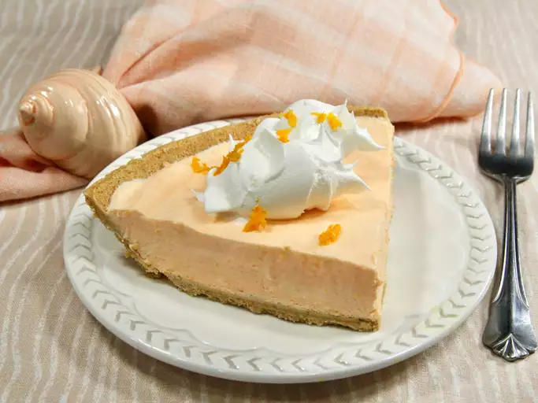

No-Bake Orange Creamsicle Pie

Description
This no-bake orange creamsicle pie tastes just like the childhood favorite frozen treat, creamy, rich, and with a bright, punchy orange pop from fresh orange zest and juice, along with orange Jell-O.
Ingredients
- ½ (3 ounces) package orange flavored gelatin
- ⅓ cup boiling water
- 1 tablespoon grated orange zest, plus more for garnish
- ½ cup fresh orange juice
- 4 ounces cream cheese, at room temperature
- 1 (8 ounce) container frozen whipped topping, thawed
- 1 (9 inch) ready-to-use graham cracker pie crust
- ½ cup drained, canned mandarin oranges in water, patted dry
Directions
- Gather all ingredients.
- Whisk orange gelatin and boiling water together in a medium bowl until completely dissolved and slightly cooled, about 2 minutes. Whisk in orange zest and juice until combined. Set aside.
- Whisk cream cheese in a large bowl until smooth, about 30 seconds. Gradually whisk in gelatin mixture until smooth.
- Whisk in 1 1/2 cups whipped topping until smooth and no lumps remain; refrigerate creamsicle filling uncovered, until partially set and slightly thickened, about 30 minutes
- Pour filling into graham cracker crust and spread evenly. Cover and refrigerate until set, at least 4 hours or up to overnight.
- Before serving, spoon the remaining 1 1/2 cups whipped topping over the orange layer and spread into an even layer.
- Arrange mandarins decoratively over the top, sprinkle with zest, and serve.
Home
Recipe Source